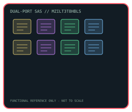

[ INDIVIDUAL COMPONENT // ENTERPRISE SAS SOLID-STATE DRIVE ]
Samsung PM1643a 3.84 TB (MZILT3T8HBLS-00007)
Model-specific catalog record for full manufacturer SKU MZILT3T8HBLS-00007. Rated endurance and performance below are manufacturer figures; configured host, firmware, workload and cooling affect results.

IDENTIFICATION: Match the complete part number MZILT3T8HBLS-00007, capacity and label before installation. This is a SAS product, not a SATA SSD.
Specifications
| Manufacturer / model | Samsung PM1643a |
|---|---|
| Full SKU / option | MZILT3T8HBLS-00007 — read-intensive (PM1643a) variant. |
| Interface / protocol | Dual-port 12 Gb/s SAS (SAS-3), backward compatible with 6/3/1.5 Gb/s SAS; SAS protocol, not SATA or NVMe. |
| Capacity / form factor | 3.84 TB formatted capacity; 2.5-inch SFF, 15 mm height. |
| NAND / endurance class | V-NAND 3-bit MLC (TLC); read-intensive class rated at 1 DWPD over a 5-year warranty period. Manufacturer-published lifetime writes are capacity-specific; a lifetime rating is not a promise of field life. |
| Performance | Manufacturer states up to 2,100 MB/s sequential read and 2,000 MB/s sequential write (128 KB), with up to 450,000 random-read IOPS and 90,000 sustained random-write IOPS (4 KB) on a 12 Gb/s dual-port link. This is a family ceiling, not a per-drive benchmark; throughput and latency vary with SKU, queue depth, workload, link and host settings. |
| Power-loss protection / power | Manufacturer lists power-loss protection and end-to-end data protection. The product overview gives input-rail and operating-power tables by capacity; use the matching datasheet table for enclosure thermal and power budgets. |
| Host compatibility | Requires a SAS HBA/controller and SAS-capable backplane/cabling; dual-port operation depends on host topology. A SATA-only host/controller cannot speak SAS. Check server/OEM firmware qualification, connector/caddy clearance for 15 mm height, sector format and supported capacities before deployment. |
Compatibility & service notes
- Use a SAS controller and backplane; don't infer support from physical similarity to a SATA 2.5-inch drive.
- For SED variants, encryption/erase provisioning depends on the controller, operating system and security policy; retain required keys before service.
- Confirm dual-port cabling, link negotiation, capacity and firmware support with the server or storage-array vendor. OEM firmware may differ from retail firmware.
- Record label, firmware, host/controller, date and SMART/health snapshot. Keep verified backups and periodic integrity checks.
Manufacturer datasheets & manual
- Samsung PM1643a 12G SAS SSD product overviewSamsung Semiconductor manufacturer datasheet; consult the exact part-number and capacity rows.
- Samsung enterprise SSD PM1643a product pageManufacturer family landing page for datasheets and documentation.